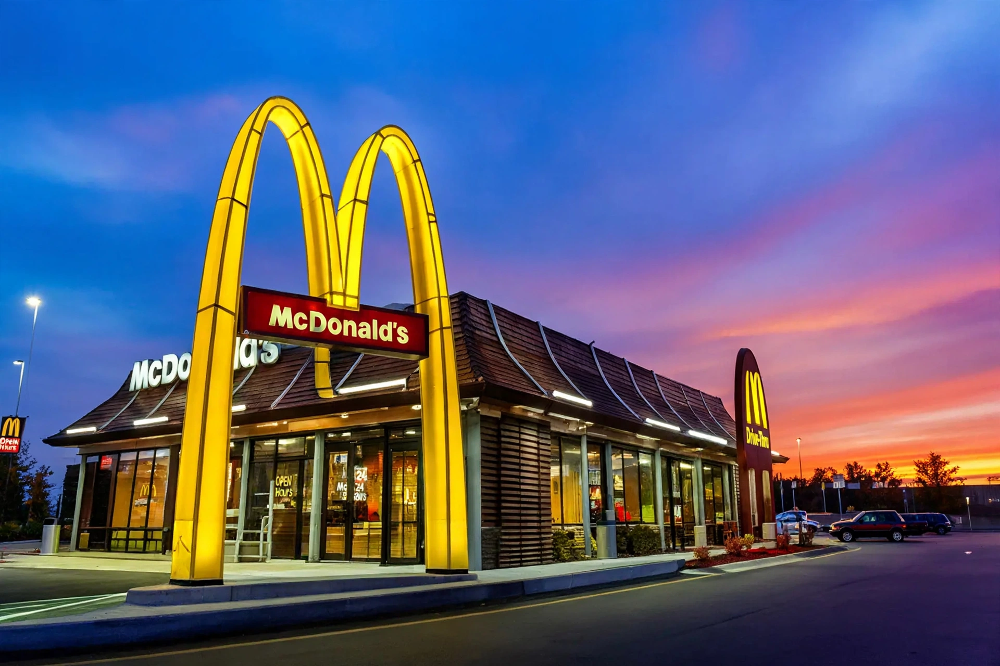

| Type | Public |
|---|---|
| Industry | Fast food restaurants |
| Founded | May 15, 1940 (San Bernardino, California, as a restaurant); April 15, 1955 (Des Plaines, Illinois, as the McDonald's Corporation) |
| Founders | Richard and Maurice McDonald (restaurant); Ray Kroc (corporation) |
| Headquarters | Chicago, Illinois, U.S. |
| Number of locations | Over 40,000 (2023) |
| Products | Hamburgers, chicken, french fries, soft drinks, breakfast items |
McDonald's Corporation, doing business as McDonald's, is an American multinational fast food chain, founded in 1940 as a restaurant operated by Richard and Maurice McDonald in San Bernardino, California, United States. They rechristened their business as a hamburger stand and later turned the company into a franchise. The Golden Arches logo, introduced in 1953, is among the most recognizable corporate symbols in the world.

In 1955, Ray Kroc, a milkshake machine salesman who had been impressed by the brothers' efficient "Speedee Service System", joined the company as a franchise agent and proceeded to buy the chain from the McDonald brothers in 1961. McDonald's is the world's largest restaurant chain by revenue, serving over 69 million customers daily in over 100 countries across approximately 40,000 outlets. Although McDonald's is best known for its hamburgers, cheeseburgers and french fries, it also sells chicken products, breakfast items, soft drinks, milkshakes, wraps and desserts. Signature products include the Big Mac (introduced in 1968), Quarter Pounder, Chicken McNuggets, and the Egg McMuffin.
The original McDonald brothers' restaurant opened on May 15, 1940, in San Bernardino. In 1948 they reorganized the business around self-service and a limited menu of 15-cent hamburgers, pioneering the fast-food production line. Kroc opened his first franchised restaurant in Des Plaines, Illinois, on April 15, 1955, and aggressively expanded the chain, buying out the brothers for $2.7 million in 1961. The company went public in 1965. International expansion began in 1967 in Canada and accelerated through the 1970s–1990s, including the famous 1990 opening in Moscow. The company adapted menus to local tastes worldwide, from the McFalafel in Israel to teriyaki burgers in Japan.
Most McDonald's restaurants are owned and operated by independent franchisees. The corporation earns revenue from rent, royalties, and fees paid by franchisees, as well as sales in company-operated restaurants; its real-estate holdings are a major part of its business model. The chain is often used as a symbol of globalization and American consumer culture, and it is the namesake of the "McDonaldization" concept in sociology and of The Economist's Big Mac index of purchasing-power parity.
McDonald's has been criticized over the nutritional content of its food, its treatment of workers, and its marketing to children. The 2004 documentary Super Size Me and the "McLibel" trial in the United Kingdom are notable episodes. In response, the company has added salads and other healthier options and committed to sustainability targets.